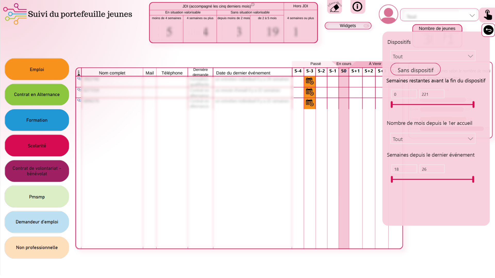
Suivi du portefeuille jeune
Tableau de bord pour suivre les parcours et indicateurs des jeunes accompagnés.
Data Analyst • BUT SD • CY Tech
Étudiante en première année de cycle ingénieur à CY Tech, diplômée d’un BUT en Sciences des Données, je me spécialise en datavisualisation et conception d’outils décisionnels. J'ai réalisé de nombreux projets académiques et professionnels portant sur la collecte, le traitement, l'analyse et la restitution des données.

Étudiante en première année de cycle ingénieur à CY Tech et diplômée d’un BUT en Sciences des Données, j’ai acquis des compétences en analyse, modélisation et restitution de données via des projets universitaires (SAE, challenges) et des expériences en entreprise (stage et alternance). Mes missions ont couvert la conception et l’automatisation de tableaux de bord Power BI, la création de bases de données et l’accompagnement utilisateur pour des outils décisionnels.
Cliquez sur une fiche pour découvrir le détail complet du projet.

Tableau de bord pour suivre les parcours et indicateurs des jeunes accompagnés.
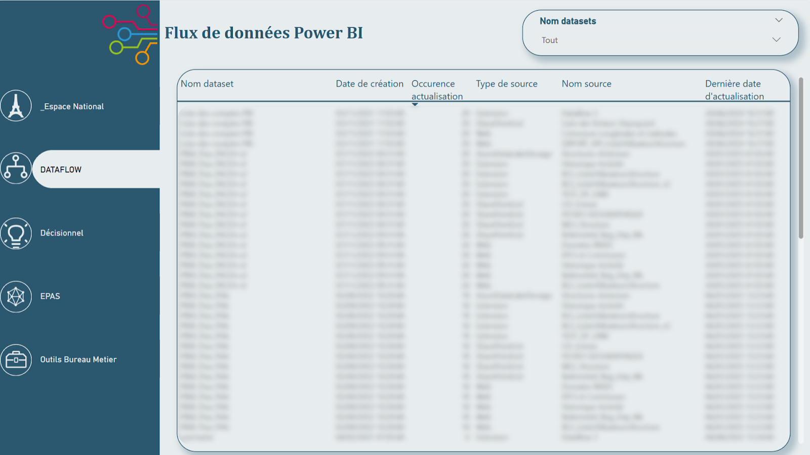
Mise en place et automatisation des flux d'alimentation et transformations.
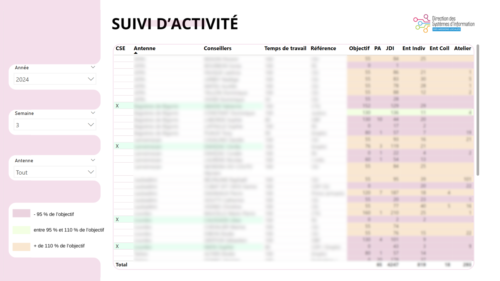
Dashboards pour le suivi opérationnel des activités et indicateurs.
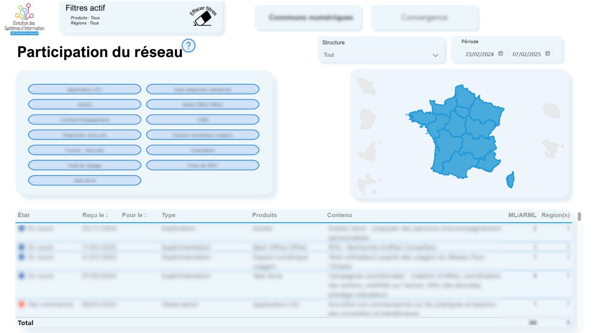
Outils d’analyse et de mesure de la participation des acteurs du réseau.
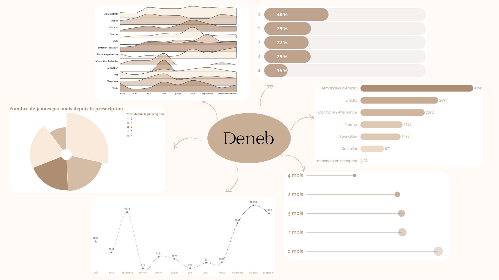
Développement de visuels personnalisés pour enrichir les rapports Power BI.
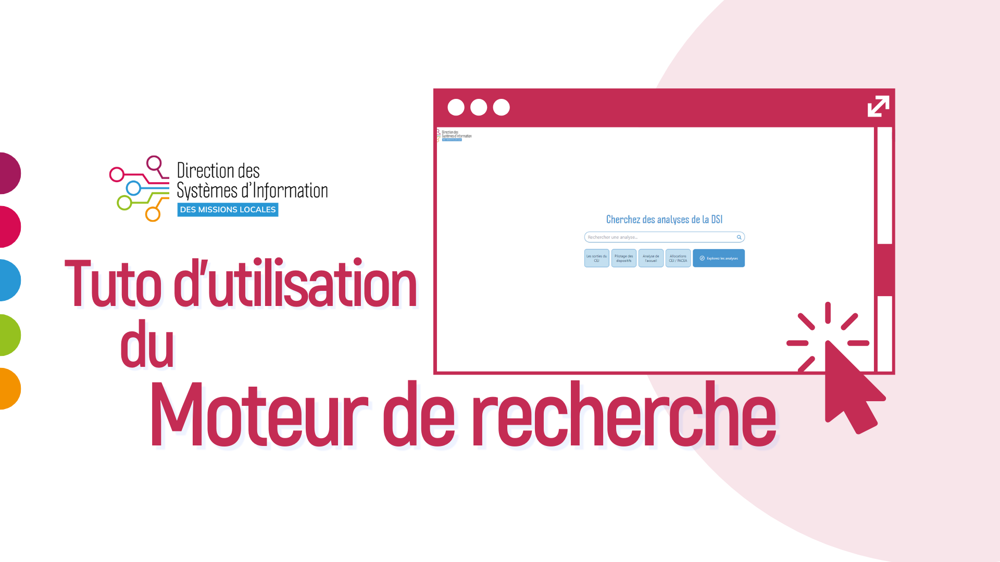
Création de vidéos explicatives pour accompagner et former les collègues.
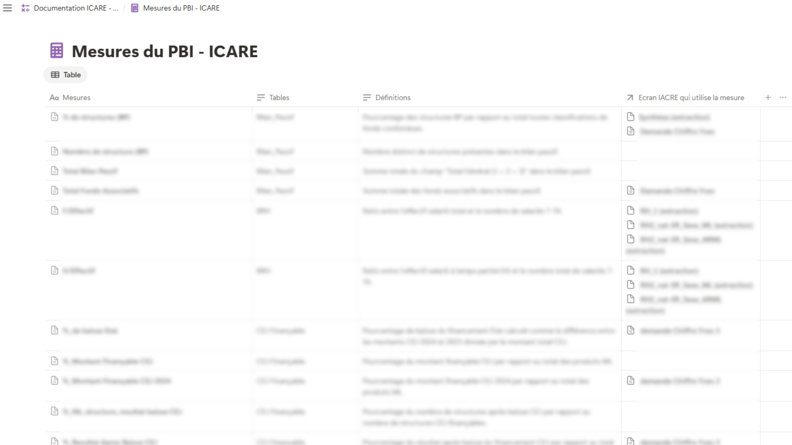
Création d’une base Notion centralisant documents et procédures internes.
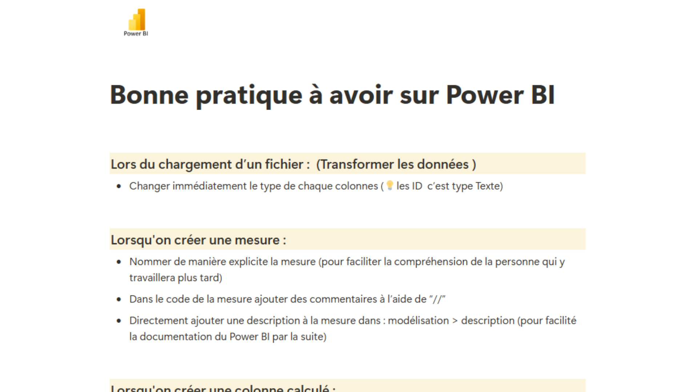
Conception de fiches “bonnes pratiques” (Power BI, automatisation, outils).

Extraction et restitution de données via SQL et dashboards.
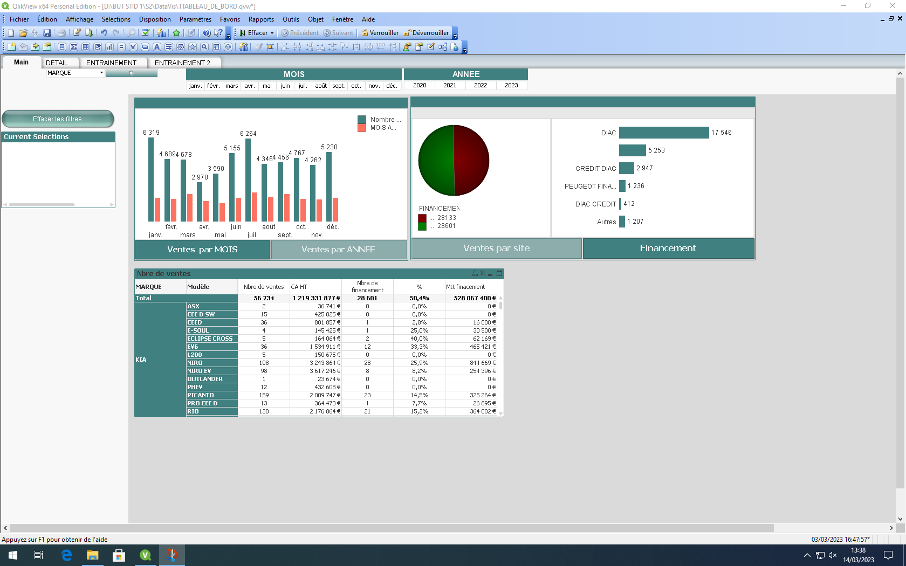
Construction de dashboards interactifs sous QlikView.
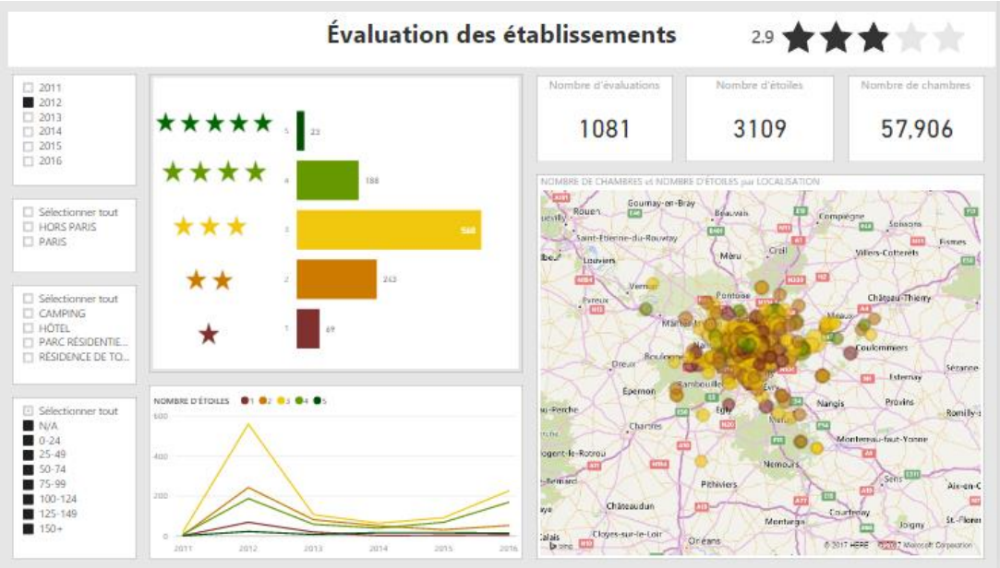
Création de tableaux de bord et mesures DAX simples.

Challenge de 24h pour créer un tableau de bord pertinent.

Modélisation et restitution pour des cas concrets.
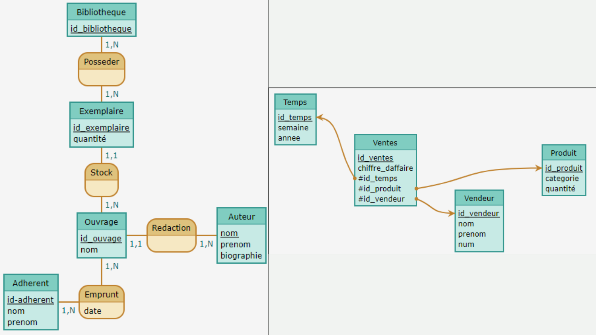
Modélisation décisionnelle : MCD / MLD et entrepôts.
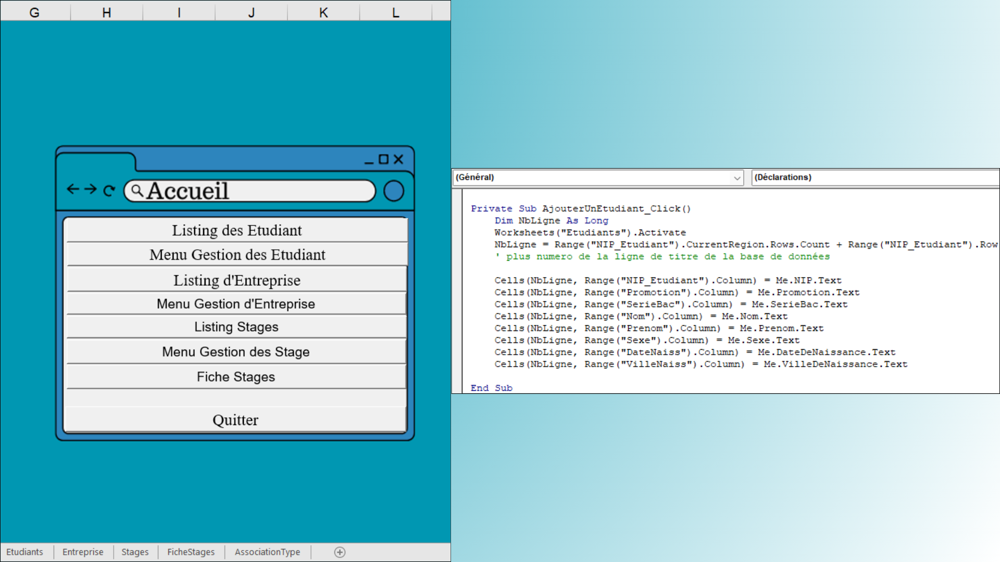
Automatisation de tâches et formulaires sous Excel.

CAH sur données régionales, interprétation et visualisation.

Analyse exploratoire et descriptive sur données sportives.

Création du questionnaire, collecte et analyse statistique.
Restitution finale via dashboards et rapport technique.
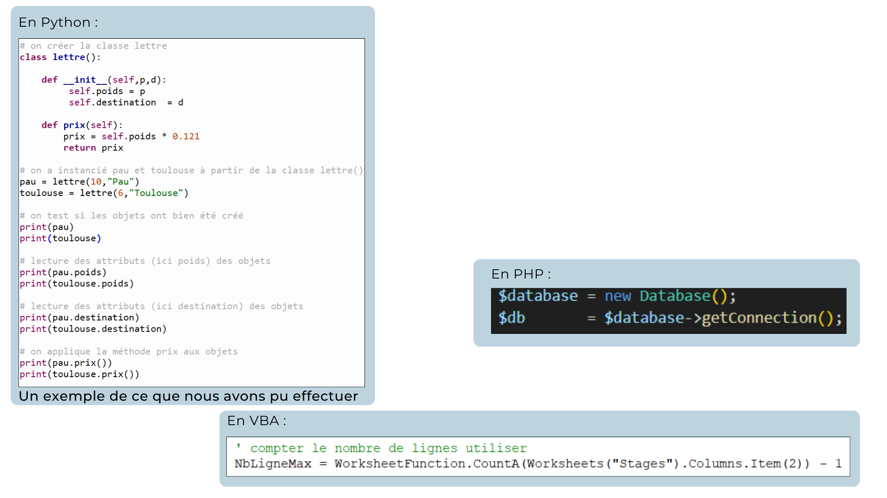
Conception d’applications Python/VBA modulaires et réutilisables.
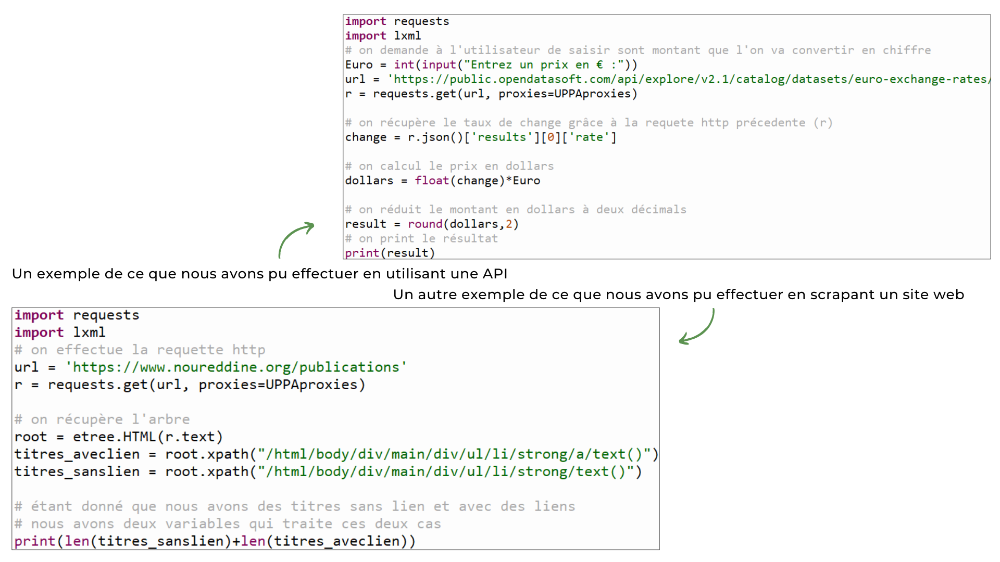
Scraping et APIs pour automatiser la collecte de données externes.
Découvrez les retours de mon réseau professionnel sur mon travail et mes projets. Cliquez ci-dessous pour lire le post complet.
Voir le post LinkedIn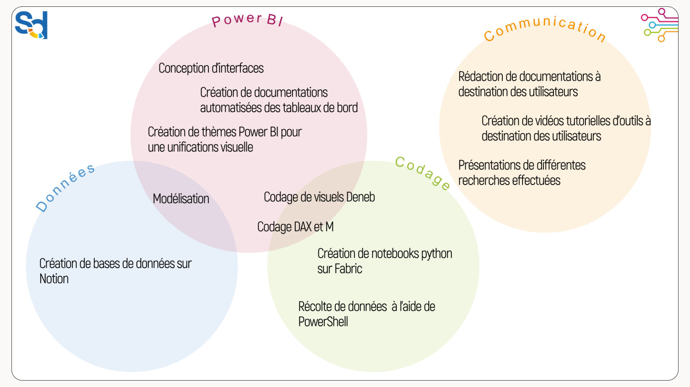
Je reste à votre disposition pour tout échange ou opportunité professionnelle.